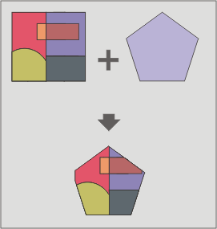

Вырезание (Clip)
Этот инструмент вырезает объекты исходного слоя с помощью операционного слоя. В результате создаются объекты, которые находятся внутри границ объектов операционного слоя.
Выходной слой будет иметь идентичную схему исходному.

Это может быть использовано для получения объектов интересующего региона, границы которого нанесены в операционном слое.